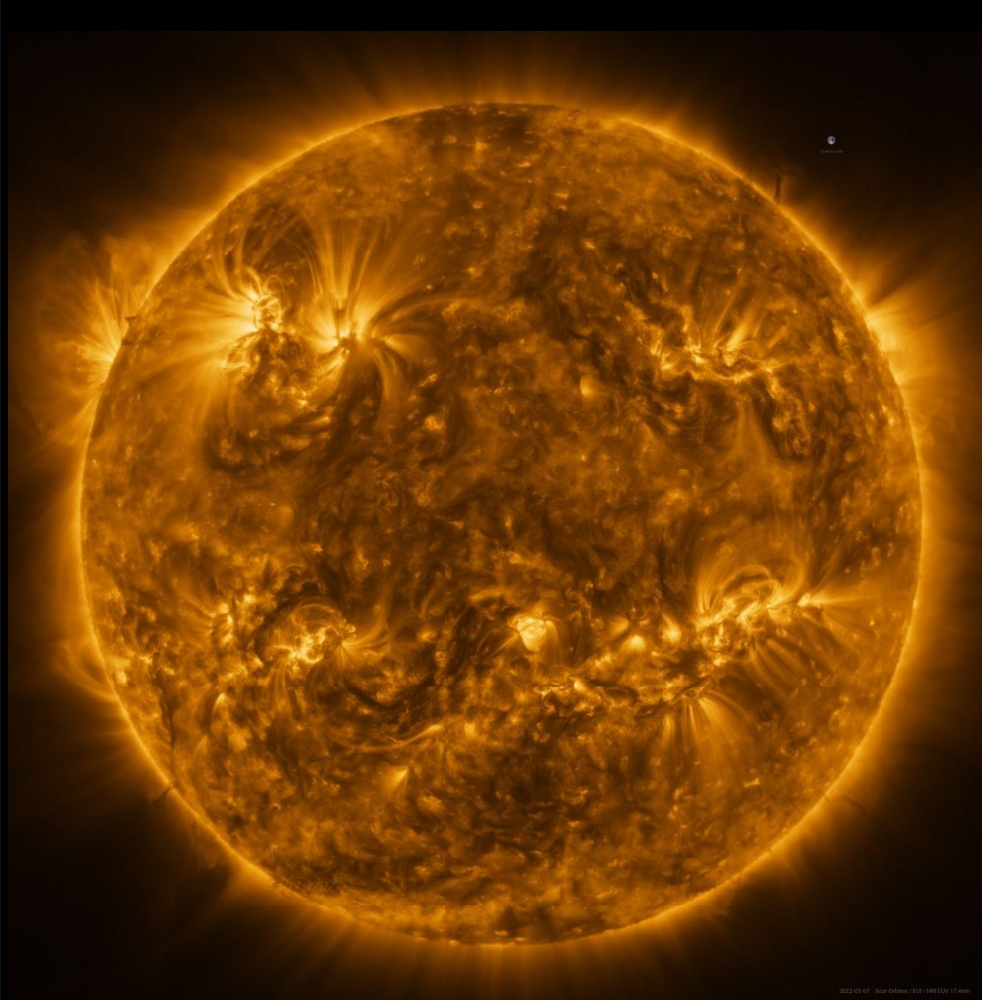

Галактика


Сегодня ученые сходятся во мнении, что галактики являются скоплением разнородных тел
– миллиардов звезд, звездной пыли, газа, туманностей, планет и т.н. темной материи.
Вся эта разнородная совокупность объединена гравитационной энергией и вращается
вокруг общего центра.

 Наша планета и Солнечная система находятся в галактике Млечный путь.
Наша планета и Солнечная система находятся в галактике Млечный путь.
 Несмотря на то, что мы и так не смогли покинуть пределы Солнечной системы, нам
удалось очень много узнать о том, что находится за её пределами при помощи
астрономических наблюдений и астрофизики. И с каждым годом системы наблюдений
становятся всё мощнее.
Несмотря на то, что мы и так не смогли покинуть пределы Солнечной системы, нам
удалось очень много узнать о том, что находится за её пределами при помощи
астрономических наблюдений и астрофизики. И с каждым годом системы наблюдений
становятся всё мощнее.

Количество известных астрономам галактик постоянно меняется, причем в обе стороны.
Если в конце XX века по самым смелым предположениям во Вселенной насчитывали 100
млрд. галактик, то в 2016-м их количество увеличили до немыслимых двух триллионов.
Однако к настоящему времени высказывается осторожное предположение, что их все же
значительно меньше. Не исключено, что цифра ещё не раз изменится.
Нужно отметить, что существует понятие астрономической Вселенной (или наблюдаемая
Вселенная) – по сути, это та часть мирового пространства, которая доступна нам для
обзора при помощи самых мощных из имеющихся сейчас технологий. Поэтому мы пока что
можем только предполагать, насколько велика Вселенная в действительности.
 Из всех известных галактик самой удаленной от нас является HD1. Она расположена на
расстоянии 33,4 миллиарда световых лет и отличается чрезвычайно ярким светом,
несмотря на свою удаленность, она заметно выделяется среди других свечений при
наблюдении её в самые мощные телескопы.
Из всех известных галактик самой удаленной от нас является HD1. Она расположена на
расстоянии 33,4 миллиарда световых лет и отличается чрезвычайно ярким светом,
несмотря на свою удаленность, она заметно выделяется среди других свечений при
наблюдении её в самые мощные телескопы.